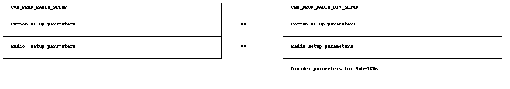

PHY Configuration¶
Each PHY on the CC13xx and CC26xx is configured by a combination of
A Setup radio operation command,
RF core firmware patches,
RF core register overrides.
All these settings are generated using SysConfig (SmartRF Studio can also be used). This section explains the necessary basics for understanding these files and for making minor tweaks.
When using the RF driver, all 3 parts, the setup command, patches and overrides are used as parameters for RF_open():
RF_open(&rfObject, &RF_prop, (RF_RadioSetup*)&RF_cmdPropRadioDivSetup, NULL);
Read more on setting up the RF core:
SimpleLink Academy: Exporting RF settings from SmartRF Studio
Setup Command¶
The setup command is the first radio operation that is posted to the RF core after power-up. Each PHY has its own flavored command. Usually, it programs basic configuration parameters like the modulation format and the symbol rate.
For the proprietary PHY, for instance, two different setup commands exist:
CMD_PROP_RADIO_SETUP can only be used when operating at 2.4 GHz as it does not contains the frequency divider setting needed for the sub-1 GHz band.
CMD_PROP_RADIO_DIV_SETUP must be used when operating in the Sub-1 GHz band, and can be used when operating on the 2.4 GHz band.
The relationship of both commands is shown in the following image.
Patches¶
Patches are additions to the RF core firmware. The CC13xx and CC26xx family is shipped with a RF core firmware in ROM. Whenever an issue is observed, additional features are added or a new chip revision is published, some firmware changes might become necessary. Patches are provided as binary blob for the CPE, MCE and the RFE. They are part of the device-specific content in the SimpleLink CC13xx/CC26xx SDK. Patches are loaded into the RF core RAM when powering up the RF core. The RF driver combines pointers to all patches in a structure called RF_Mode, for instance:
RF_Mode RF_prop =
{
// ...
.cpePatchFxn = &rf_patch_cpe_genfsk, // Command and Packet Engine
.mcePatchFxn = 0, // Modem Control Engine
.rfePatchFxn = &rf_patch_rfe_genfsk, // Radio Front-end Engine
// ...
};
The table below give a brief overview over the patches for CC13xx and when and how they are used.
For the patches where it’s referred to SmartRF Studio in the table below, do a code export to see the usage.
Patch |
Short description |
Link to further documentation |
|---|---|---|
rf_patch_cpe_bt5 |
CPE patch for BLE |
Use the provided examples and settings from the SDK |
rf_patch_cpe_ieee_802_15_4 |
CPE patch for Zigbee |
Use the provided examples and settings from the SDK |
rf_patch_cpe_multi_bt5_coex |
CPE patch for BLE co-existence |
Please see Coexistence for details |
rf_patch_cpe_multi_protocol |
CPE patch for the RF driver |
See DMM examples. This patch is used if more than one protocol is used |
rf_patch_cpe_multi_protocol_rtls |
CPE patch for the RF driver |
See DMM examples. This patch is used if more than one protocol is used and RTLS is used |
rf_patch_cpe_prop |
CPE patch for the RF driver |
Use the provided examples and settings. Look for settings with FSK in the name in SmartRF Studio |
rf_patch_mce_genook |
MCE patch to support OOK. |
Use the provided examples and settings. Look for settings with OOK in the name in SmartRF Studio |
rf_patch_mce_iqdump |
MCE patch to dump IQ samples |
More information regarding this patch could be found in CC13xx IQ Samples |
rf_patch_mce_wb_dsss |
MCE patch to support WB DSSS |
More information regarding this patch could be found in Wide-Band DSSS Mode |
rf_patch_mce_wmbus_ctmode |
MCE patch to support wmbus. Combined C and T-Mode |
Use the provided examples and settings. Look for settings with WMBUS in the name in SmartRF Studio |
rf_patch_mce_wmbus_smode |
MCE patch to support wmbus. S-Mode |
Use the provided examples and settings. Look for settings with WMBUS in the name in SmartRF Studio |
rf_patch_rfe_ble_coex |
RFE patch for BLE co-existence |
Please see Coexistence for details |
rf_patch_rfe_genook |
RFE patch to support OOK |
Use the provided examples and settings. Look for settings with OOK in the name in SmartRF Studio |
Overrides¶
Overrides contain additional configuration settings for the RF core firmware that are not part of the setup command. They are written into the RF core RAM and can be seen as variables of the RF core firmware. Overrides are interpreted by the RF core firmware and therefore, their order is important. Several types exist:
overrides that write to internal hardware registers on the RF core
overrides that write to firmware parameters located in the RF core RAM
Overrides are usually taken as-is from SysConfig (or SmartRF Studio). They
are gathered in a 1-dimensional array of integers that is terminated by
0xFFFFFFFF and then linked to the pRegOverride parameter in the setup
command:
// Overrides for CMD_PROP_RADIO_DIV_SETUP
static uint32_t pOverrides[] =
{
// 0: Run MCE firmware from ROM.
// 4: Run MCE firmware from ROM bank 4.
// 0: Use MCE firmware in mode 0. Sometimes, a patch provides more than one operation mode.
// 1: Run RFE firmware from RAM (use the patch instead of the ROM.
// 0: Does not apply, since RFE firmware runs from RAM.
// 0: Run RFE firmware in mode 0.
MCE_RFE_OVERRIDE(0,4,0,1,0,0),
// ...
// Termination value
(uint32_t)0xFFFFFFFF
}
RF_cmdPropRadioDivSetup.pRegOverride = &pOverrides;